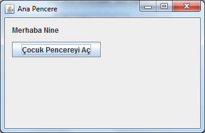
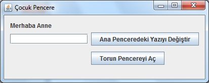
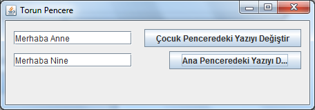

Java Swing Pencereler Arası İletişim
Java’da swing ile birden fazla pencere kullanan herkesin aklına “bir pencereden diğerini nasıl kontrol edebilirim” sorusu gelmiştir her halde. Bu yazıda bunu örneklemeye çalışacağım. Birbiri ile bağlantılı 3 pencere olacak projemizde. Bunları ana pencere, çocuk pencere ve torun pencere olarak isimlendirelim. Tahmin edebileceğiniz gibi ana pencere’de bir butona basıldığında çocuk pencere, çocuk pencerede bir butona basıldığında torun pencere açılacak.
Bunlara ek olarak çocuk pencereden ana pencere üzerindeki bir yazıyı değiştireceğiz. Ayrıca torun pencere üzerinden hem ana hem de çocuk pencere üzerindeki yazıları değiştireceğiz. Programın ekran görünümü aşağıdaki gibi olacak.



Kavram kargaşasını önlemek için bir pencereyi açan pencereye, o pencerenin atası (parent) diyelim. O halde bu örnekte ana pencere çocuk pencerenin atası, çocuk pencere de torun pencerenin atası olur.
Java’da pencereler arası iletişimi sağlamanın en genel yolu ata pencerenin referansını çocuk pencerenin yapıcı fonksiyonuna parametre olarak vermektir. Aşağıdaki koda bakalım: CocukPencere.java sınıfından bir kod kesimi:
/*
* Yapıcı fonksiyonu overload ediyoruz. Burada kendisini çağıran (açan) pencerenin referansını parametre olarak alıyor.
*/
private AnaPencere ataPencere;
public CocukPencere(AnaPencere ata){
this.ataPencere = ata;
initComponents(); // bu metod pencere üzerindeki buton, etiket,
//metin kutusu vb. bileşenleri ilklendirir.
}AnaPencere.java
sınıfında çocuk pencerenin açıldığı kod kesimi:
new CocukPencere(this).setVisible(true);Çocuk pencereden ana pencere üzerindeki yazının değiştirildiği kod kesimi:
ataPencere.getAnaYaziLabel().setText(anaTextField.getText());Son olarak şunu hatırlatmakta fayda var. Bir pencererin kapama simgesine tıklanıldığında aşağıdakilerden biri yapılır.
EXIT_ON_CLOSE // tüm programı kapat
DISPOSE // Sadece ilgili pencereyi kapat
HIDE // pencereyi gizle
DO_NOTHING // hiç birşey yapmaBu projede Ana pencere için bu ayar EXIT_ON_CLOSE şeklinde. Yani ana pencere kapandığında tüm pencereler kapanıyor ve program sonlanıyor. Diğer pencereler için ise DISPOSE olarak ayarlı. Pencereleri Netbeans’te çizerek oluşturuyorsanız bu ayarı properties penceresi üzerinden yapmanız gerekiyor. Eğer doğrudan kodluyorsanız ilgili kod aşağıdaki gibidir.
setDefaultCloseOperation(javax.swing.WindowConstants.EXIT_ON_CLOSE);Umarım faydalı olmuştur, herkese iyi çalışmalar.
27 Şubat 2012 Pazartesi tarihinde yayınlandı.